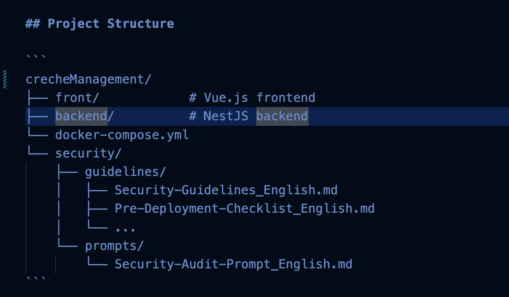
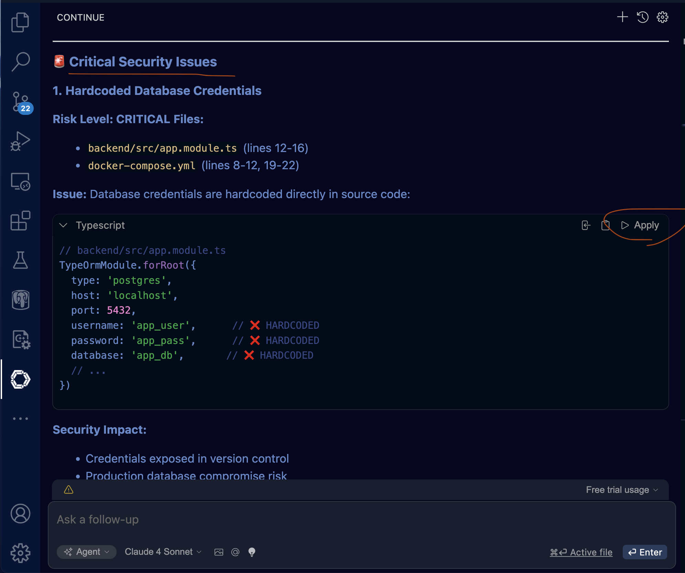
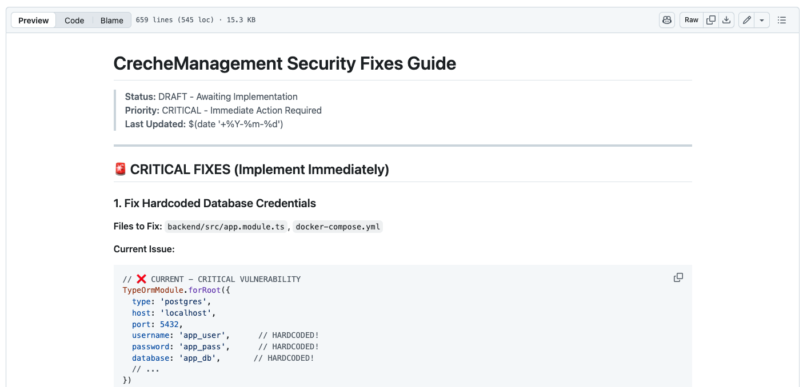

Sécuriser le Vibe Coding : Protégez vos projets novices contre les vulnérabilités catastrophiques
29 Septembre 2025, 15:00 CEST
CyberIntégrez la sécurité dès la phase créative pour respecter les normes GDPR et éviter les risques majeurs
Le Vibe Coding, cette approche de développement rapide et intuitif souvent assistée par des IA, est une révolution pour les novices ou les non-ingénieurs. Mais comme une épée à double tranchant, sa vitesse et sa créativité peuvent masquer des erreurs de sécurité graves : fuites de données, injections SQL ou authentifications faibles. Imaginez travailler pour une entreprise soumise à la GDPR – une seule brèche pourrait entraîner des amendes colossales et une perte de confiance. Cela pourrait être complexe puisqu’il y a tellement de règles à respecter, comme l’OWASP Top 10, la sécurité des infrastructures DevOps, la sécurité des tiers, ainsi que la sécurité des requêtes API et des solutions EDR. Aujourd’hui, nous explorons comment intégrer la sécurité dès le départ avec un outil open-source génial : Code-Guardian-Aegis (*1). Ce repo GitHub transforme vos prompts IA en gardiens de sécurité, évitant les "erreurs impossibles" que les débutants commettent souvent par commodité.
Introduction à la sécurité en Vibe Coding
Pourquoi la sécurité est cruciale dès la phase "Vibe" ? Le Vibe Coding priorise l'inspiration et la rapidité, mais sans garde-fous, il expose à des risques comme les fuites de secrets (clés API codées en dur) ou les configurations permissives. Pour une conformité GDPR, il faut traiter les données personnelles avec chiffrement, validation et logs sécurisés.
- Fuites de données : Secrets exposés dans le code frontend.
- Mauvaises configurations : Permissions 777 ou CORS mal réglés.
- Logique métier faible : Authentification basée sur des usernames sans tokens.
En adoptant des outils comme Code-Guardian-Aegis, on passe d'un développement "fun" à un processus professionnel, alignant créativité et sécurité sans alourdir le workflow.
Découverte de l’outil Code-Guardian-Aegis
Repo GitHub : Code-Guardian-Aegis
Ce projet agit comme un bouclier de sécurité pour le Vibe Coding, conçu pour prévenir les vulnérabilités chez les novices utilisant des générateurs de code IA.
- Dossier
security-guidelines-documents/: Checklists de bonnes pratiques sécurisées, multilingues, pour la prévention des erreurs. ( pour la phrase développement du code ) - Dossier
security-audit-meta-prompt/: Meta-prompts pour audits automatisés, pour analyser le code avant déploiement selon OWASP Top 10 et autres règles. ( pour la phrase deployment du code )
Étapes pratiques avec VSCode et Continue
Voici un guide pas à pas pour intégrer la sécurité dans un projet comme CrecheManagement :
1. Installation et configuration de Continue
- Installer VSCode et l’extension Continue.
- Configurer un modèle local Ollama pour un LLM offline.
- Modifier
config.jsonpour pointer vers Ollama. (*2)

2. Préparez votre projet
- Cloner le repo Code-Guardian-Aegis dans ./security/.
- Vérifier la présence des fichiers de guidelines et prompts. voici example promp :
Please scanning all the file in this repo under crecheManagement, used principal guidemeine from @file ./security/guidelines/Security-Guidelines_English.md , then Analyze and highlight all potential security issues in the entire CrecheManagement codebase, following these security guidelines. Focus on: - No hardcoded secrets (e.g., API keys, URLs). - Proper error handling (e.g., catch Axios errors, user-friendly messages). - HTTPS usage everywhere (no HTTP). - OWASP Top 10 risks like injection, broken auth. For each issue, highlight the file, line numbers, and suggest fixes with code examples. Generate a report in Markdown format, then suggest inline comments or edits to "highlight" them in the code.
3. Lancez l’audit développement via Continue (*1)
- Ouvrir le chat Continue et inclure le projet et les guidelines.
- Entrer un prompt détaillé pour scanner les fichiers et générer un rapport Markdown avec corrections suggérées. (*7)( example sur security/security-fixes.md )


4. Audit avant déploiement
- Utiliser le meta-prompt
Security-Audit-Prompt_English.mdpour analyser l’ensemble du code et générersecurity-deplyment-advice.mdavec recommandations CI/CD, RBAC et chiffrement.
"Apply the Security Guidelines from ./security/prompts/Security-Audit-prompt_English.md, to check all code from @workspace all file from crecheManagement , and generate the roles and improvement for deployment to /crecheManagement/security/security-deplyment-advice.md"
5. Génération de la liste de fixes
- Demander à Continue de créer
security-deployment-fixes.mdpour une checklist priorisée des correctifs à appliquer.
Tableau récapitulatif des étapes
| Étape | Outil | Action | Résultat Attendu |
|---|---|---|---|
| Préparation | VSCode + Continue | Installer extension et Ollama | IA locale prête pour audits sécurisés |
| Intégration guidelines | Code-Guardian-Aegis | Copier fichiers dans projet | Checklists multilingues pour prompts IA |
| Audit développement | Continue Chat | Entrer le prompt d'analyse | Rapport Markdown avec highlights et fixes |
| Audit déploiement | Continue avec Audit-Prompt | Appliquer le meta-prompt pour infrastructure | Conseils dans security-deplyment-advice.md : rôles RBAC, CI/CD sécurisé |
| Génération fixes | Continue | Demander création de security-fixes.md | Liste priorisée : .env, .gitignore, JWT, etc. |
| Application | VSCode | Appliquer suggestions | Code sécurisé, conforme GDPR |
Conclusion
Dans le monde du Vibe Coding, intégrer la sécurité via Code-Guardian-Aegis et Continue transforme les risques en opportunités. Plus de surprises catastrophiques : vos projets deviennent robustes, conformes GDPR, et prêts pour une mise en production professionnelle.
Références
Partagez cet article :